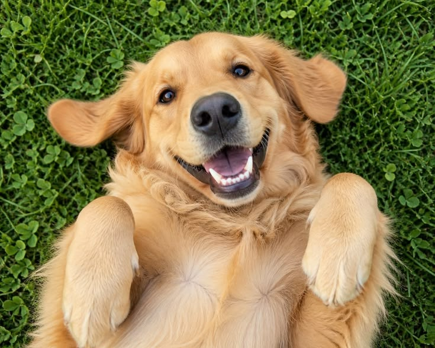
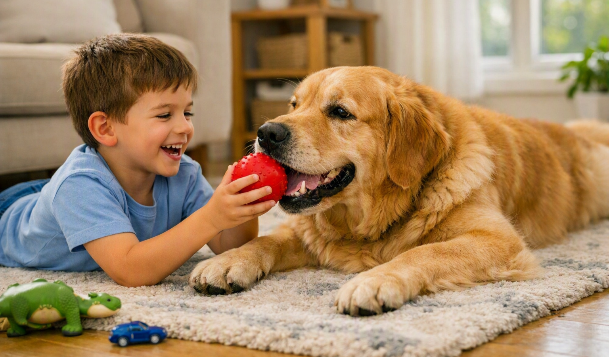
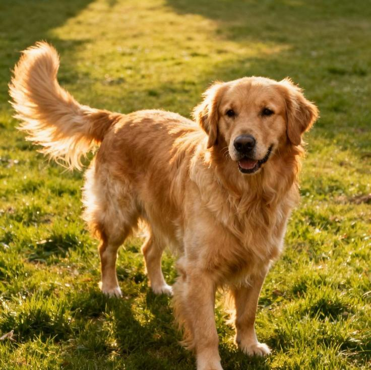
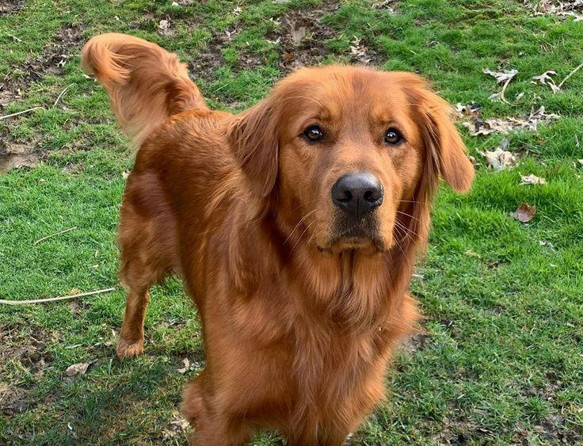
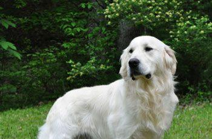

Golden Retriever
Il Golden Retriever è celebre in tutto il mondo per la sua straordinaria dolcezza, lealtà e socievolezza, oltre alla proverbiale bellezza dorata.
Cane intelligente, equilibrato ed estremamente sensibile, è la scelta perfetta per le famiglie e per chi cerca un compagno di vita fedele. Ama l'acqua, il gioco e condividere ogni momento con le persone che ama.
Caratteristiche
Tempo e Routine

Ha bisogno di tempo quotidiano, passeggiate e interazione continua.
Cura e Impegno
Richiede toelettatura costante e cure veterinarie preventive.
Valutazione dello spazio
Adattabile anche ad appartamenti, purché con uscite e passeggiate frequenti.
Maggiori informazioni
Tempo e Routine
Cane attivo e vivace, ama le lunghe passeggiate, il gioco del riporto e soprattutto nuotare. Ha bisogno di canalizzare la sua energia in attività quotidiane stimolanti per mantenere l'equilibrio sia fisico che psicologico.
Cura e Impegno
Il caratteristico mantello dorato, denso e idrorepellente, richiede spazzolate frequenti e regolari per evitare nodi e ridurre i peli sparsi per casa. È importante porre attenzione anche alla pulizia preventiva e al controllo delle orecchie.
Valutazione dello spazio
A dispetto della taglia medio-grande, si adatta molto bene anche all'appartamento purché gli vengano garantiti i giusti momenti all'aria aperta; tuttavia la presenza di un giardino rappresenta l'ideale per i suoi momenti di svago.
Pro e Contro
✓ Per chi è ideale
- Temperamento molto dolce, mite e affidabile con i bambini
- Alta addestrabilità ed spiccata intelligenza
- Indole socievole e pacifica sia con le persone che con gli altri animali
▲ Cosa tenere a mente
- Soffre molto la solitudine ed ha bisogno della presenza umana
- Perde una discreta quantità di pelo durante tutto l'anno
- Ama l'acqua e il fango, richiedendo un po' di pazienza nella pulizia
Momenti ed espressioni



Palette di colori


